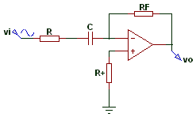

Un filtro paso alto (HPF) es un tipo de filtro electrónico en cuya respuesta en frecuencia se atenúan los componentes de baja frecuencia pero no los de alta frecuencia, éstas incluso pueden amplificarse en los filtros activos. La alta o baja frecuencia es un término relativo que dependerá del diseño y de la aplicación.